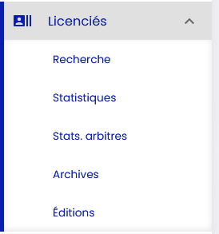
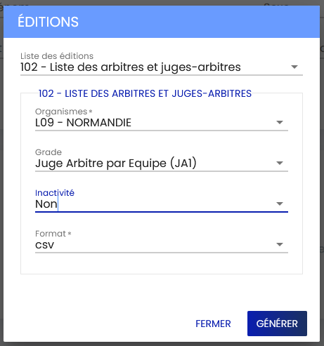

Cette action rejoue un fichier 102 FFTT sans réimporter la grille : pour chaque licence marquée « actif » dans le fichier, si le JA est actuellement Inactif dans NIJAC, il est repassé à Actif et sa date de validation est mise à jour. Aucun JA déjà actif ni absent de la base n'est modifié.
-
Se connecter au SPID FFTT
Rendez-vous sur spid.fftt.com et connectez-vous avec vos identifiants. -
Menu Licenciés → Éditions
Dans le menu de gauche Licenciés, cliquez sur Éditions.
-
Choisir l'édition « 102 »
Dans la liste des éditions, sélectionnez102 - Liste des arbitres et juges-arbitres, puis renseignez :- Organismes : L09 - NORMANDIE
- Grade : Juge Arbitre par Équipe (JA1)
- Inactivité : Oui (pour récupérer aussi les JA redevenus actifs)
- Format : CSV

-
Générer et sauvegarder
Cliquez sur Générer, puis enregistrez le fichier sur votre poste. -
Lancer la vérification
Cliquez sur le bouton ci-dessous et sélectionnez le fichier téléchargé. -
Résultat
Le nombre de JA réactivés s'affiche et la grille se recharge.